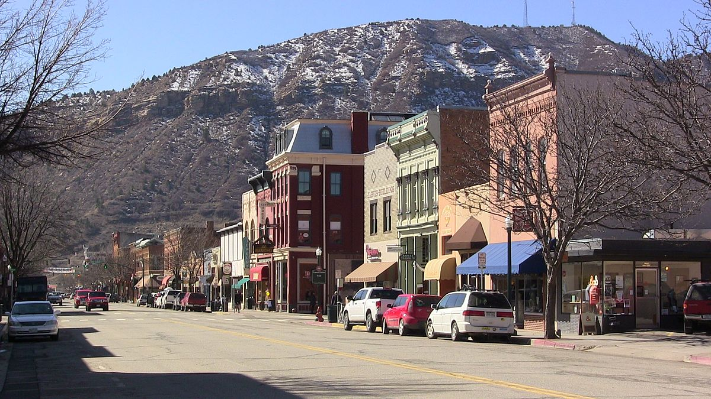
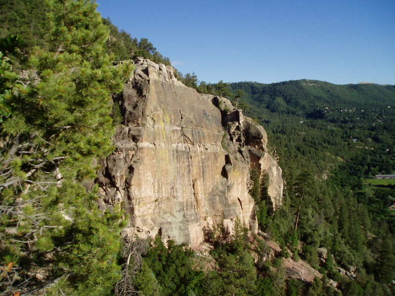
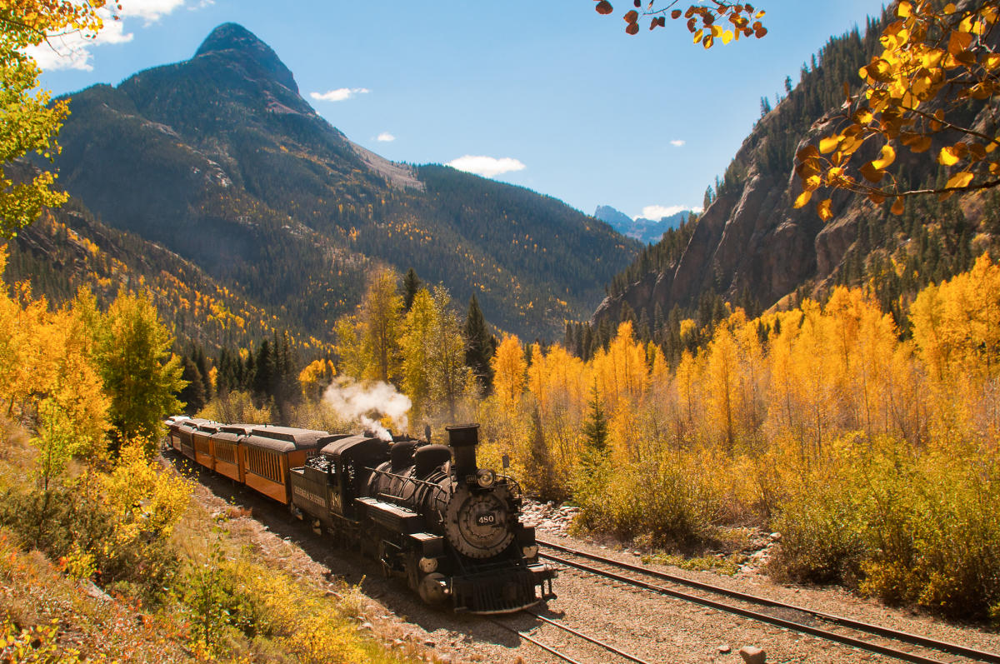

Durango, Colorado
Things to do while you're visiting

-
Check out our charming downtown
Durango's historic
downtown has tons of great food and drink, shopping,
live music, views, and the charm of an old Western town. Ask
us for our favorite spots!
-
Take a hike
The Animas
River Trail is great for a quick walk or a pleasant bike
ride through the heart of Durango. If you're feeling up for
some elevation gain,
try Animas
City Mountain,
the Hogback,
or the
Skyline
Trail. Driving up to Silverton or the La Plata Mountains
will blow you away with high alpine vistas and fresh
mountain air. Trail runners and mountain bikers will love
all these areas as well.
-
Raft the Animas River
Right in the middle of the city, the Animas has anything
from mellow flatwater that's great for SUPing or a lazy
float, all the way to Class III rapids at the whitewater
park south of downtown. You can rent duckies or rafts, as
well as hire a guide for the day,
from Mild 2
Wild.
-
Explore history and science
The Animas
Museum has lots of interesting artifacts showcasing the
fascinating history of this area. It is located in an old
schoolhouse with the teacher’s log cabin next door. (Fun
fact: we went here while Celeste was looking for a new car,
long before we ever started dating.) Another fun,
family-oriented museum is
the Powerhouse a hands-on
science museum located in an old power station right on the
river.

-
Sample the local rock climbing
Right in town we've got great bouldering
at Sailing
Hawks, classic trad climbing
at East
Animas, and a brand-new climbing
gym, the
Gravity Lab. A little further afield and you can do some
amazingly picturesque climbing
at Cascade
Canyon
or Lemon
Reservoir! If you're sticking around after the wedding,
we'd love to take anyone out for a day.
-
Get some beach time
For those with kids or anyone who just wants to sit in the
sun for a
day, Lake
Nighthorse is a local lake with swimming and inflatable
slides, trampolines, and other water play things.
-
Discover the ancient Southwest
Mesa Verde
National Park is a forty minute drive away and offers
amazing views of the Four Corners region.

-
Take the historic train to Silverton
The Durango Silverton
Narrow Gauge Railroad is an old train line that was used
during the mining era and still runs. It follows the Animas
River from Durango to Silverton and looks extremely
beautiful (though we've never actually ridden it).